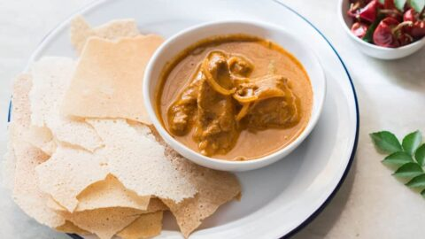

Kori Roti

Description
Lucky for you I've decided to share a very special part of my childhood ;) This chicken curry with a coconut milk
base hails for the konkan region of South India, hosting one of the most hidden food cultures in the world
(especially seafood). This curry is usually accompanied by a thin rice roti made on very large griddles and then
folded onto each other. All in all, you get textural diversity and warm spices supported by the rich coconut
base. A true gem!
This recipe is also weeknight friendly!
Ingredients
- 1 large onion, finely minced
- 2 lb chicken, ideally dark meat
- 1 can coconut milk
- 2 tbsp coconut oil
- Handful of curry leaves
- 1 1/2 tsps chilli powder
- 1 1/2 tsps corriander powder
- 1/2 tsps turmeric powder
- water to dilute curry
Steps
- Start by heating up your coconut oil in a large dutch oven pot. Once shimmering, add your onions
- Brown your onions until a deep dark brown. You may have to lower the heat mid way through the cooking
process to ensure that the onions dont burn
- Once the onions are sufficiently browned, lower the heat to low and add all of your dried spices and curry
leaves. Stir thoroughly to distribute the spices across the onions
- Keeping the heat low-medium, add your chicken into the pot. You're not trying to sear it, merely start the
cooking process. There should be no more visible raw spots before moving on to the next step
- Add your coconut milk and an equal amount of water. Stir the dish until everything is evenly distributed.
Place the top on your pot and let it simmer for 20-30 minutes.
- Once the chicken is tender, your kori roti is ready!